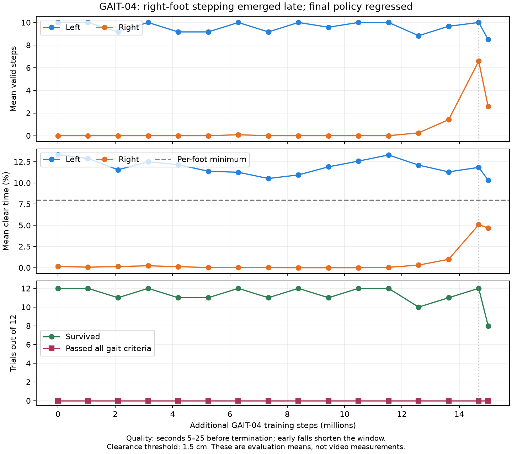

Target speed 0.35 m/s. Each clip lasts 25 seconds at normal speed. The two camera angles show the same motion. Left foot: blue. Right foot: orange.
Both policies use the same replay seed (1000). These are individual illustrative trials, not proof of reliable walking. Neither policy is an accepted gait. The exact 14.68M-step policy from the promising evaluation was not saved; the first clip uses the nearest saved late checkpoint at 14.22M.
Completed 25 seconds without falling. After the first 5 seconds: 10 left steps, 5 right steps; mean forward speed 0.357 m/s. Right-foot clear time: 3.5%. Whole-trial flight fraction: 2.86%.
Open / download this videoCompleted 25 seconds without falling in this replay. After the first 5 seconds: 10 left steps, 3 right steps; mean forward speed 0.375 m/s. Right-foot clear time: 4.95%. Whole-trial flight fraction: 2.98%. Its separate 12-trial evaluation had four falls.
Open / download this videoWatch whether the orange foot lifts and advances, whether successive steps alternate, and whether both legs contribute similarly. The step counts require at least 1.5 cm whole-sole clearance, 80 ms airborne and 4 cm forward body-relative travel.

Experiment report · Replay provenance · Previous GAIT-02 video